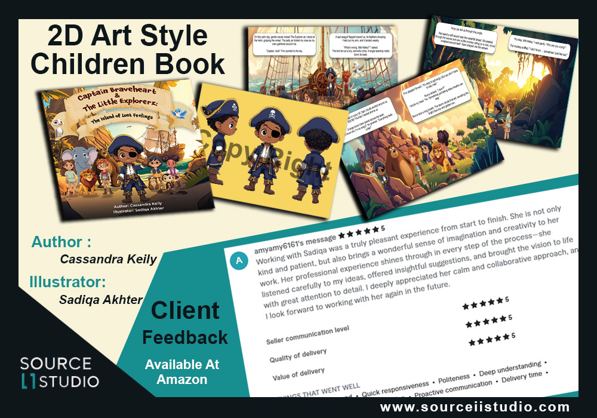
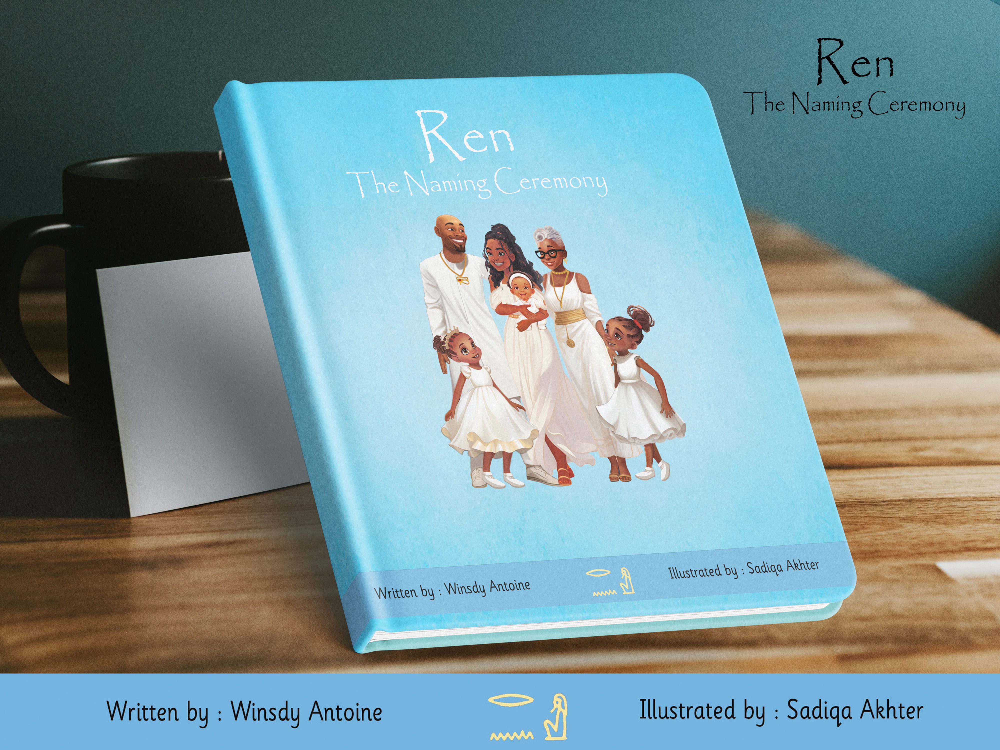

Authors & Publishers
Illustration, characters, layouts, KDP support, and publishing-ready assets.
Creative Services
For authors, publishers, businesses, educators, and founders who need polished creative-tech execution.

Service Areas
Tale Whims is Sadiqa's own book-selling brand. Client services are handled through Source II Studio.
Illustration, characters, layouts, KDP support, and publishing-ready assets.
Book trailers, explainers, launch visuals, classroom visuals, and social assets.
Founder sites, portfolio pages, landing pages, and clean digital systems.
Visual systems, campaigns, brand storytelling, and public-facing design.
AI-supported content workflows, creative automation ideas, and production support.
Digital products, campaign assets, presentations, and creative systems.
Best Fit
Picture books, characters, layouts, trailers, and launch assets.
Illustration, educational visuals, formatting support, and repeatable workflows.
Websites, branding, AI-supported content, products, and campaigns.
Learning content, classroom visuals, explainers, and creative-tech support.
Studio Proof
Source II Studio serves authors, publishers, businesses, and creative-tech clients. Tale Whims remains Sadiqa's own story-selling brand.
Start a Source II Studio Inquiry



Explore More